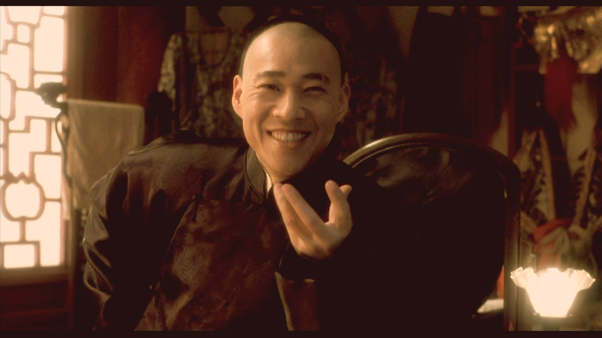
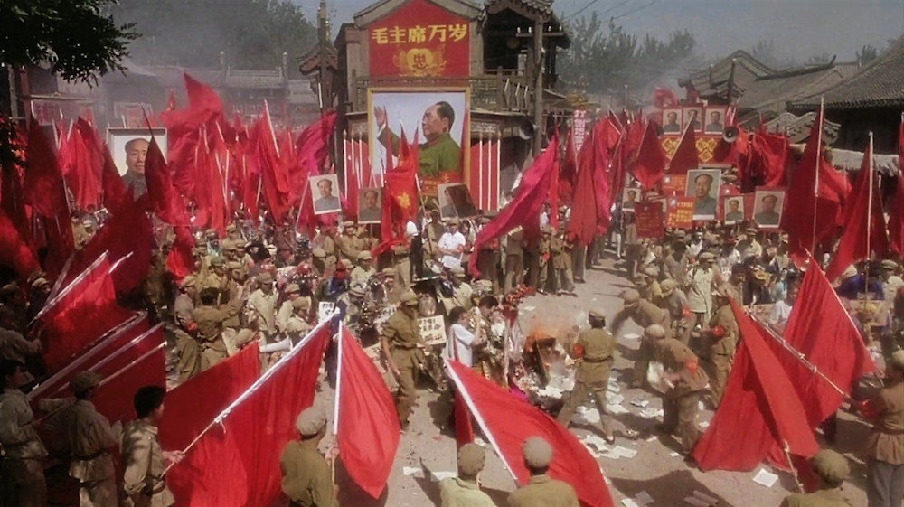
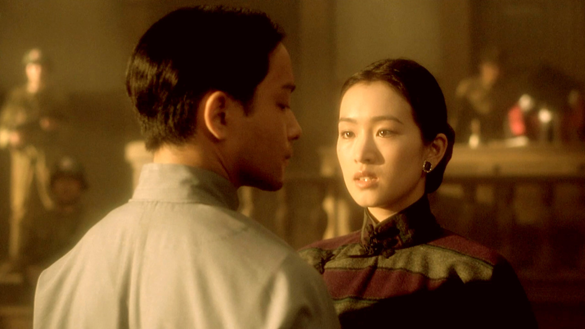

Farewell My Concubine(1993)(hereinafter referred to as Concubine) suggests several subjects to deal with. From Queer's point of view, there are papers that talk about how China expressed and accepted Queer in the 20th century, analyze the characteristics of the period in terms of the film production itself. However, I would analyze the film starting from the scene where opera actors are dragged in front of the crowd on stage and criticized, which is the climax of the story, and focus on the Cultural Revolution.
First, I would consider the characteristics of a refined work which including films. From the screenplay to directing and editing, there is no piece that is not within the reach of the creator's intentions. In other words, this means that producers can deliver only the stories they want to the audience in the way they want. The same goes for Concubine. Director Chen projected his image of the Cultural Revolution into the film. Characters, regardless of political ideology, are simply portrayed as victims of unexplained violence.
The 1920s to 1970s, which is the time background of the film, were a period when the Kuomintang, Japan, and the CCP argued for their own modernization. However, for each character in the film, the change of the times meant only the faces of other perpetrators. Individuals were thoroughly oppressed and fell victim to violence, and eventually even the boundaries between perpetrators and victims became blurred. During the Cultural Revolution, Xiaolou and Xiao Si are portrayed as representatives of violence, but their aspects are quite different.
Xiaolou born in 1910 was a universal figure who lives up to the changing times. Married to raise a family, and only to survive, he was properly poised. The circumstances only made him evaluate him as a victim or perpetrator. At this point I was reminded of Lu Xun's (1881-1936) novel, The True Story of Ah Q. In this novel, Lu Xun criticizes the universal image of the Chinese of the time through the character Ah Q. “Ah Q is a Chinese everyman, but rather than a sympathetic 'little man' fighting against greater forces. ” Ah Q turns away from the essential issue and comforts himself with a mental victory without admitting himself as a loser. Although there is a time lag of about 40 years from the time Lu Xun references, Xiaolou is no different. He was not a man of any purpose or belief. Even if he had aspiration for a peking opera actor, it cannot be said that it is the value of his life. Being swept away by the times, he was an ignorant individual who at some point became a victim and unintentionally became a perpetrator.
Xiaolou
On the other hand, Xiao Si represents the Red Guard in the movie. Considering the fact that director Chen accused his father when he was a teenager and belonged to the Red Guard, Xiao Si may be a projection of himself. However, he did not have a deep understanding of political ideology and did not have the initiative to initiate a revolution, and was simply preoccupied with the act of destroying the values of the past by dismissing them as outdated. Furthermore, he wanted to create a new position for himself on the remnants. This is indirectly revealed in the scene where he took the role of Yu from Dieyi before the Cultural Revolution and looked at the theater props he had taken away during the Cultural Revolution.
Peking Opera Actors are being criticized in the square
Unlike them, Dieyi was a victim of several major losses from start to finish. Needless to say, the plot of Concubine is the whole of his story. As he was too busy to be a victim, he could not set his own beliefs once, and he could not see society from a subjective perspective. In a situation where he almost lost consciousness during the treatment of opiate addiction, the line "Ma, the water's turned to ice." means that Dieyi had not escaped the wounds of the past.
As the film is based on the Peking Opera of the same name as its main subject, and the character relationships have the same composition, there is also the importance of the Peking Opera as a cinematic device. It is also worth discussing that Juxian's role has grown in contrast to the original novel. However, the above stories were boldly omitted because the core content was conveyed within a limited space.
Dieyi and Juxian constitue relationship unique to film
image cited: https://mubi.com/notebook/posts/close-up-on-farewell-my-concubine-a-spectacular-ode-to-life-love-and-art